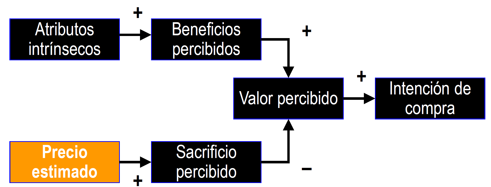
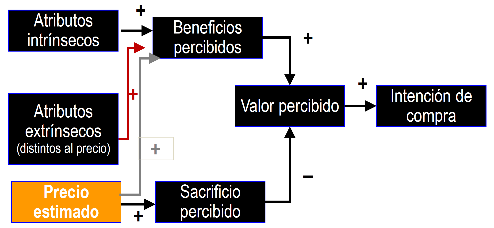

2.1. Concepto de precio. El precio como instrumento de marketing🔗
El precio en la economía🔗
El precio es un dato impuesto por el mercado. Surge de la intersección entre las curvas de oferta y demanda, no puede ser modificado por un individuo.
Asumimos un modelo de competencia perfecta:
- Productos homogéneos
- Información completa
- Consumidor racional
Competencia perfecta: un modelo que desmiente la realidad
- Productos diferenciados
- Mercados no transparentes
- Consumidor limitadamente racional
El precio como herramienta comercial🔗
Buscamos la diferenciación de nuestro producto. El precio es una variable comercial clave para el éxito.
- Instrumento de estímulo de la demanda con gran influencia en la cuota de mercado, beneficios y rentabilidad.
- Uno de los elementos más flexibles del mix de marketing. Es un arma competitiva poderosa que se puede emplear con relativa facilidad y rapidez.
- Único instrumento que genera ingresos. Las restantes variables suponen un gasto.
- Juega un papel relevante en el posicionamiento y diferenciación del producto.
Distintas denominaciones del precio🔗
Al precio se le llama de distinta forma según el contexto:
- Precio → bienes de consumos e industriales
- Honorarios → servicios profesionales, como médicos y abogados
- Alquiler/renta → utilización de inmuebles o equipos durante un tiempo específico
- Prima → seguros
- Tarifa → energía eléctrica, agua, teléfono
- Tasa → servicio público
- Jornal → trabajo de un día
Conceptos de precio🔗
Concepto tradicional de precio🔗
Cantidad de dinero que se precisa para adquirir una determinada cantidad de un bien o servicio.
\(Precio=\dfrac{cantidad\; de\; dinero\; intercambiado}{cantidad\; de\; producto\; intercambiado}\)
Es una definición muy limitada, ya que no tiene en cuenta:
- El sacrificio total del consumidor es más que el dinero que entrega (tiempo, molestias)
- Lo que se recibe a cambio de algo es algo más que una determinada cantidad de producto
Concepto ampliado de precio🔗
Es el conjunto de esfuerzos y sacrificios (monetarios y no monetarios) que un consumidor debe realizar como contrapartida a la obtención de un determinado nivel de utilidad. Dicho nivel de utilidad depende de la cantidad y calidad de aquello que el consumidor recibe del vendedor.
\(Precio=\dfrac{esfuerzo\; o\; sacrificio\; total\; del\; consumidor}{utilidad\; o\; satisfacción\; total\; recibida}\)
El precio tiene una naturaleza compleja y multidimensional
Posibles formas de modificar el precio de un producto🔗
Podemos modificar el precio de un producto a través de sus componentes (sacrificio del consumidor o satisfacción recibida)
Esfuerzo o sacrificio del consumidor
- Variar la cantidad de dinero exigida a cambio de una determinada cantidad y calidad del producto
- Aplicación o eliminación de descuentos. Ej: rappels
- Cambiar momento, lugar o modalidad de pago.
Utilidad o satisfacción recibida
- Modificar la cantidad de producto recibida por el mismo dinero
- Modificar la calidad de producto
- Concesión de regalos
- Añadir (o dejar de prestar) servicios adicionales: transporte, instalación y montaje, reducción del plazo de entrega, etc.
El papel del precio en el proceso de decisión de compra🔗
Desde la perspectiva del marketing, el proceso de compra del consumidor puede ser analizado como un sistema de intercambio de beneficios o satisfacciones por sacrificios monetarios y no monetarios.
Definimos valor percibido como...
Evaluación global del producto basada en la estimación de lo que el consumidor espera recibir a cambio de lo que sacrifica.
\(Valor\; percibido = \dfrac{Beneficios\; percibidos}{Sacrificio\; percibido}\)
La elección del consumidor recaerá sobre aquel producto con mejor relación beneficio-sacrificio (calidad-precio)
Definición y ejemplo de atributos intrínsecos y extrínsecos🔗
Orden
En las transparencias aparecen los modelos normativo y positivo antes que este apartado, pero el profesor considera mejor este orden.
Atributos intrínsecos: tienen un carácter formativo, generan utilidades o ventajas buscadas en el producto.
- Ej: automóvil → potencia, seguirdad, consumo, diseño, prestaciones...
Atributos extrínsecos o variables de imagen (distintos al precio): tienen un carácter reflectivo, son atributos de los cuales los consumidores suelen extraer información acerca de la calidad (aunque no se consideran determinantes de la calidad). No van a generar utilidades ni satisfacción, pero su presencia puede ser interpretada como señal de calidad
- Ej: automóvil → marca, fabricante, país de origen... Puedo creer que un BMW tiene calidad por ser famoso, pero puede tener el motor de un 600
Modelos🔗
El modelo normativo🔗

El modelo positivo🔗

Considera que el precio puede ser un atributo extrínseco (efecto dual del precio sobre el valor), puede afectar a la imagen del producto. Se comporta igual que la marca. Aunque un vino cueste 100 nada me garantiza que sea bueno